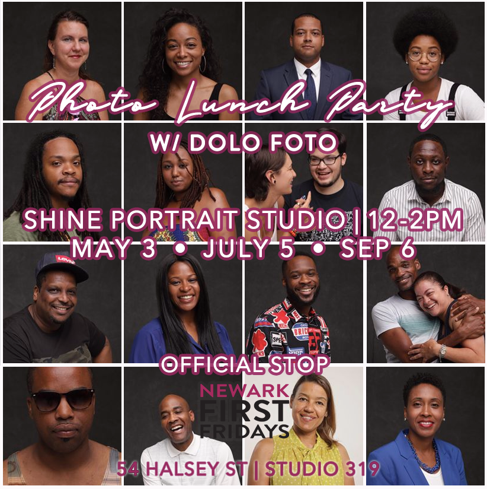
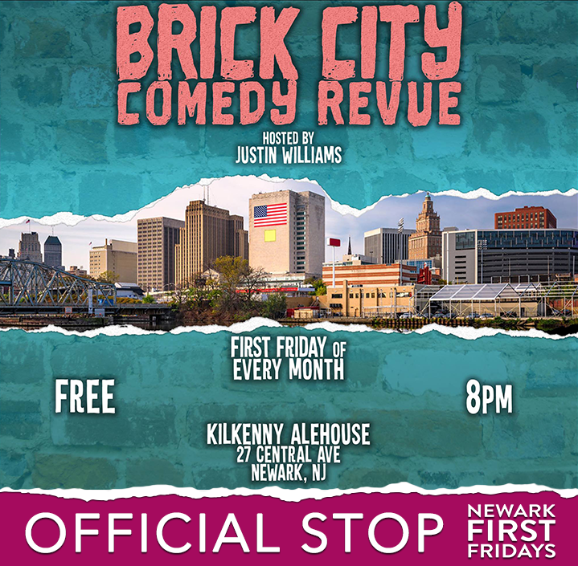

Galleries & Official Stops
Explore our partners and city monthly. Have an offering? APPLY.
Brick City Comedy Revue • 8pm - 10pm
- Join us for the Brick City Comedy Revue hosted by Justin Williams May 3rd is the 5th anniversary of the show, got Newark's own Lucas Brothers headlining!
- Dolo Foto will take your portrait (3 shots) with up to three backdrops – one formal headshot, one seated with the Festival energy in the background, and one photo in motion against a white backdrop. Dress code is smart casual or whatever you like, we are artists after all!
- Led by Girls on Bikes + Brick City Bike CollectiveThe Bike Tour will meet at 5:30PM and takeoff at 6:15PM beginning at the Southern Plaza of Military Park (intersection of Broad Street & Park Place).
Save the date(s); explore select Official Stops monthly and have a good time riding around the city of Newark!
Bike rentals provided by Newark Community Cyclng Collective • More informetion TBA
- The Newark Print Shop (NPS) is a community fine art printmaking studio in Downtown Newark, NJ. Bringing the fine art of printmaking to Newark since 2012!
- A pop-up gallery/shop created by M.Gosser as part of a curatorial residency with Index Art Center. Extended hours for Newark First Fridays.
- nonprofit contemporary arts organization dedicated to supporting and promoting the visual arts in Newark, New Jersey. Collaborating with schools and other nonprofit organizations to provide educational and community-based programs in an active art gallery, IAC serves as both a critical link between art and community, and as a conduit for emerging artists.
- Seeks to be a part of the fabric of the city and the neighborhood we are continuing to build. It is about being a cool spot with fresh and tasty food.
- A unique culture, a positive space; a co-working space for intellectuals, techies & entrepreneurs of NJ.
- View 3 new exhibitions on view, plus a smaller show in the Art Shop. Visitors are welcome to join the Aferro throughout the day, but also ask that you add a "save the date" on your calendars for the annual Gallery Aferro Art Auction and Fundraiser on Saturday, June 15th.
- Stop by each Newark First Fridays for extended happy hour and each of these favs of Market Street.
And MORE...
Official Bike Tour — Monthly
Led by Girls on Bikes + Brick City Bike Collective • Meetup aft 5:30
Photo Lunch Party — May 3, National Bike Month
Dolo Foto will take your portrait (3 shots) with up to three backdrops • Noon — 2PM @ Shine Portrait Studio